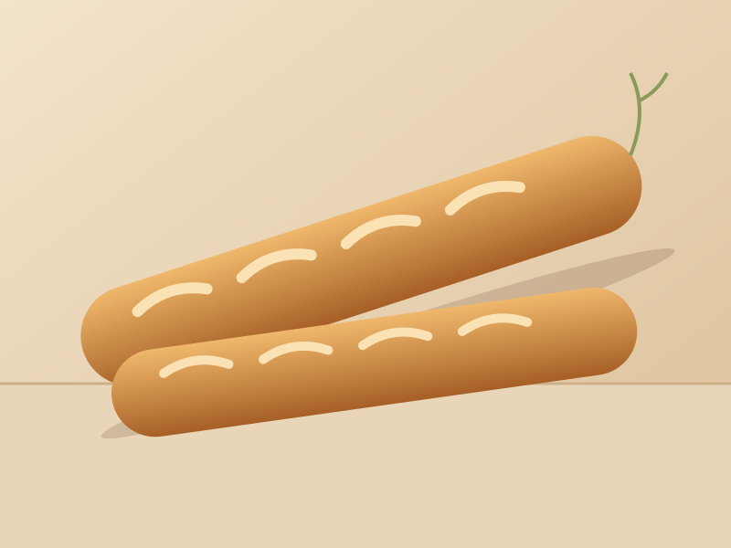
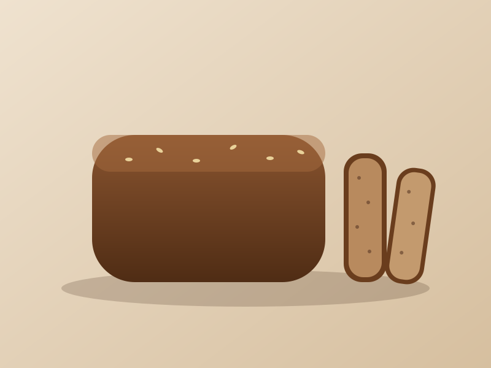

VeganDaily
Country Sourdough
Our signature boule — crackling crust, open crumb and a gentle tang.
The loaf that started it all. A blend of stone-milled wheat and 10% whole rye, fermented with Margot, our 12-year-old starter. Expect a blistered, crackling crust, a glossy open crumb and a mellow tang.
Our signature boule — crackling crust, open crumb and a gentle tang.

Poolish-fermented, thin shattering crust, creamy crumb. Best eaten within hours.

Dense, dark and packed with sunflower, flax and pumpkin seeds. Slice thin.

Rich with butter and free-range eggs. Unbeatable as French toast.

A sourdough, a baguette and a rotating special loaf, every Saturday.
Our country dough folded with Kalamata olives and fresh rosemary.
Stone-milled heritage wheat and rye from three family farms in the Willamette Valley.
Store cut-side down on a board for 2 days, or slice and freeze for up to a month.
All breads contain gluten. Our kitchen also handles nuts, seeds, eggs and dairy.
Visit the pastry case for croissants, swirls and celebration cakes.